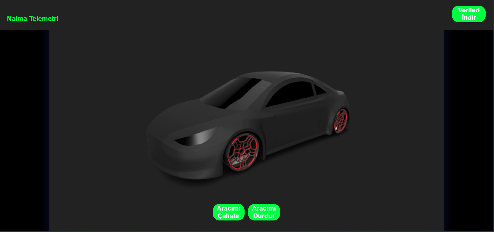

At Bursa Science High School, we worked on an electric car project, and our team regularly participated in TÜBİTAK e-vehicle races.
The project required a telemetry system to track crucial data such as car speed, battery temperature, battery percentage, and more.
We developed a solution by integrating a website with NodeMCU modules installed in the e-vehicle, connecting them to Firebase.
The car's data was sent to the Firebase database, and we fetched it to display on the website in real-time.
Additionally, the website's control panel allowed users to start or stop the car remotely.
It also provided an option to download the car's data history as a JSON file for further analysis.
The entire website was designed and developed by me.
This was not only a great team project but also one of my first experiences stepping into backend development.